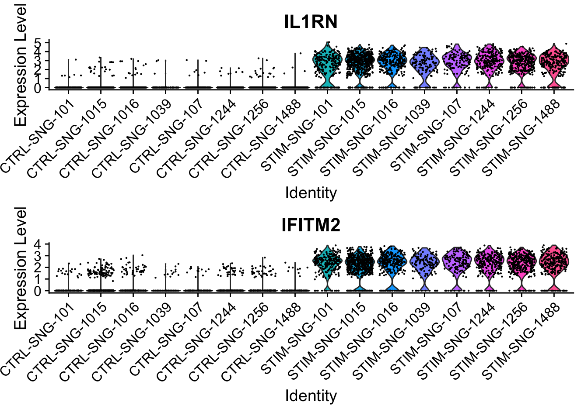
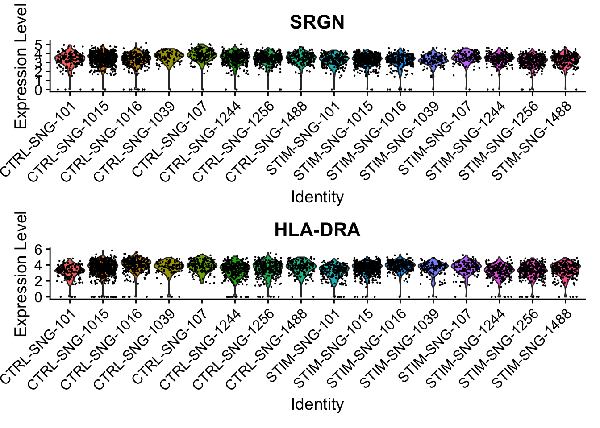

library(Seurat)
library(SeuratData)
InstallData("ifnb")
ifnb <- LoadData("ifnb")14 差异表达分析
原文：Differential expression testing
原文发布日期：2023年10月31日
14.1 数据读取和预处理
This vignette highlights some example workflows for performing differential expression in Seurat. For demonstration purposes, we will be using the interferon-beta stimulated human PBMCs dataset (Kang et al. 2017) that is available via the SeuratData package.
从本地下载好的数据读取：
An object of class Seurat
14053 features across 13999 samples within 1 assay
Active assay: RNA (14053 features, 0 variable features)
2 layers present: counts, datahead(ifnb@meta.data, 5) orig.ident nCount_RNA nFeature_RNA stim seurat_annotations
AAACATACATTTCC.1 IMMUNE_CTRL 3017 877 CTRL CD14 Mono
AAACATACCAGAAA.1 IMMUNE_CTRL 2481 713 CTRL CD14 Mono
AAACATACCTCGCT.1 IMMUNE_CTRL 3420 850 CTRL CD14 Mono
AAACATACCTGGTA.1 IMMUNE_CTRL 3156 1109 CTRL pDC
AAACATACGATGAA.1 IMMUNE_CTRL 1868 634 CTRL CD4 Memory Ttable(ifnb$seurat_annotations) # 这里的数据已经提前注释好了细胞类型
CD14 Mono CD4 Naive T CD4 Memory T CD16 Mono B CD8 T
4362 2504 1762 1044 978 814
T activated NK DC B Activated Mk pDC
633 619 472 388 236 132
Eryth
55 # 标准化
ifnb <- NormalizeData(ifnb)14.2 寻找细胞类型之间的差异基因
Caution
For a much faster implementation of the Wilcoxon Rank Sum Test,(default method for FindMarkers) please install the presto package:
devtools::install_github('immunogenomics/presto')Find DE features between CD16 Mono and CD1 Mono：
Idents(ifnb) <- "seurat_annotations"
monocyte.de.markers <- FindMarkers(ifnb,
ident.1 = "CD16 Mono",
ident.2 = "CD14 Mono")
# view results
nrow(monocyte.de.markers)[1] 6835head(monocyte.de.markers) p_val avg_log2FC pct.1 pct.2 p_val_adj
VMO1 0 5.700274 0.778 0.084 0
MS4A4A 0 3.349751 0.748 0.143 0
FCGR3A 0 3.281942 0.982 0.418 0
PLAC8 0 3.268470 0.636 0.124 0
CXCL16 0 2.014758 0.938 0.475 0
MS4A7 0 2.386436 0.978 0.558 0The results data frame has the following columns :
p_val: p-value (unadjusted)avg_log2FC: log fold-change of the average expression between the two groups. Positive values indicate that the feature is more highly expressed in the first group.pct.1: The percentage of cells where the feature is detected in the first grouppct.2: The percentage of cells where the feature is detected in the second groupp_val_adj: Adjusted p-value, based on Bonferroni correction using all features in the dataset.
If the ident.2 parameter is omitted or set to NULL, FindMarkers() will test for differentially expressed features between the group specified by ident.1 and all other cells. Additionally, the parameter only.pos can be set to TRUE to only search for positive markers, i.e. features that are more highly expressed in the ident.1 group.
monocyte.de.markers <- FindMarkers(ifnb,
ident.1 = "CD16 Mono",
ident.2 = NULL,
only.pos = TRUE)
nrow(monocyte.de.markers)[1] 2354head(monocyte.de.markers) p_val avg_log2FC pct.1 pct.2 p_val_adj
FCGR3A 0 4.532656 0.982 0.168 0
MS4A7 0 3.806350 0.978 0.216 0
CXCL16 0 3.274267 0.938 0.196 0
VMO1 0 6.254651 0.778 0.044 0
MS4A4A 0 4.747731 0.748 0.055 0
LST1 0 2.927351 0.912 0.228 014.3 寻找不同样本类型间同一细胞类型内的差异基因
Since this dataset contains treatment information (control versus stimulated with interferon-beta), we can also ask what genes change in different conditions for cells of the same type.
- First, we create a column in the
meta.dataslot to hold both the cell type and treatment information and switch the currentIdentsto that column.
ifnb$celltype.stim <- paste(ifnb$seurat_annotations, ifnb$stim, sep = "_")
table(ifnb$celltype.stim)
B Activated_CTRL B Activated_STIM B_CTRL B_STIM
185 203 407 571
CD14 Mono_CTRL CD14 Mono_STIM CD16 Mono_CTRL CD16 Mono_STIM
2215 2147 507 537
CD4 Memory T_CTRL CD4 Memory T_STIM CD4 Naive T_CTRL CD4 Naive T_STIM
859 903 978 1526
CD8 T_CTRL CD8 T_STIM DC_CTRL DC_STIM
352 462 258 214
Eryth_CTRL Eryth_STIM Mk_CTRL Mk_STIM
23 32 115 121
NK_CTRL NK_STIM pDC_CTRL pDC_STIM
298 321 51 81
T activated_CTRL T activated_STIM
300 333 Idents(ifnb) <- "celltype.stim"- Then we use
FindMarkers()to find the genes that are different between control and stimulated CD14 monocytes.
mono.de <- FindMarkers(ifnb,
ident.1 = "CD14 Mono_STIM",
ident.2 = "CD14 Mono_CTRL",
verbose = FALSE)
nrow(mono.de)[1] 6956head(mono.de, n = 10) p_val avg_log2FC pct.1 pct.2 p_val_adj
IFIT1 0 7.319139 0.985 0.033 0
CXCL10 0 8.036564 0.984 0.035 0
RSAD2 0 6.741673 0.988 0.045 0
TNFSF10 0 6.991279 0.989 0.047 0
IFIT3 0 6.883785 0.992 0.056 0
IFIT2 0 7.179929 0.961 0.039 0
CXCL11 0 8.624208 0.932 0.012 0
CCL8 0 9.134191 0.918 0.017 0
IDO1 0 5.455898 0.965 0.089 0
MX1 0 5.059052 0.960 0.093 0However, the p-values obtained from this analysis should be interpreted with caution, because these tests treat each cell as an independent replicate and ignore inherent correlations between cells originating from the same sample. Such analyses have been shown to find a large number of false positive associations, as has been demonstrated by (Squair et al. 2021), (Zimmerman, Espeland, and Langefeld 2021), (Junttila, Smolander, and Elo 2022), and others. Below, we show how pseudobulking can be used to account for such within-sample correlation.
14.4 pseudobulking后的差异分析
To pseudobulk, we will use AggregateExpression() to sum together gene counts of all the cells from the same sample for each cell type. This results in one gene expression profile per sample and cell type. We can then perform DE analysis using DESeq2 on the sample level. This treats the samples, rather than the individual cells, as independent observations. 参考前面的 Section 10.5 。
准备样本信息
First, we need to retrieve the sample information for each cell. This is not loaded in the metadata, so we will load it from the Github repo of the source data for the original paper.
可以看到，现在的meta.dat中多了样本信息列（donor_id），记录了每个细胞来自哪个患者：
head(ifnb@meta.data, 5) orig.ident nCount_RNA nFeature_RNA stim seurat_annotations
AAACATACATTTCC.1 IMMUNE_CTRL 3017 877 CTRL CD14 Mono
AAACATACCAGAAA.1 IMMUNE_CTRL 2481 713 CTRL CD14 Mono
AAACATACCTCGCT.1 IMMUNE_CTRL 3420 850 CTRL CD14 Mono
AAACATACCTGGTA.1 IMMUNE_CTRL 3156 1109 CTRL pDC
AAACATACGATGAA.1 IMMUNE_CTRL 1868 634 CTRL CD4 Memory T
celltype.stim donor_id
AAACATACATTTCC.1 CD14 Mono_CTRL SNG-1016
AAACATACCAGAAA.1 CD14 Mono_CTRL SNG-1256
AAACATACCTCGCT.1 CD14 Mono_CTRL SNG-1256
AAACATACCTGGTA.1 pDC_CTRL SNG-1039
AAACATACGATGAA.1 CD4 Memory T_CTRL SNG-1488table(ifnb$donor_id)
SNG-101 SNG-1015 SNG-1016 SNG-1039 SNG-107 SNG-1244 SNG-1256 SNG-1488
1197 3116 1438 663 652 1998 2363 2241 执行pseudobulking
按照治疗分组（STIM vs. CTRL）、患者IDs、细胞类型（seurat_annotations）3个条件，执行pseudobulking (AggregateExpression)。
pseudo_ifnb <- AggregateExpression(ifnb,
assays = "RNA",
return.seurat = T,
group.by = c("stim", "donor_id", "seurat_annotations"))
pseudo_ifnbAn object of class Seurat
14053 features across 206 samples within 1 assay
Active assay: RNA (14053 features, 0 variable features)
3 layers present: counts, data, scale.datahead(pseudo_ifnb@meta.data) # 可以看到现在的表达矩阵的列（即样本）为治疗分组+患者IDs+细胞类型 orig.ident stim donor_id
CTRL_SNG-101_CD14 Mono CTRL_SNG-101_CD14 Mono CTRL SNG-101
CTRL_SNG-101_CD4 Naive T CTRL_SNG-101_CD4 Naive T CTRL SNG-101
CTRL_SNG-101_CD4 Memory T CTRL_SNG-101_CD4 Memory T CTRL SNG-101
CTRL_SNG-101_CD16 Mono CTRL_SNG-101_CD16 Mono CTRL SNG-101
CTRL_SNG-101_B CTRL_SNG-101_B CTRL SNG-101
CTRL_SNG-101_CD8 T CTRL_SNG-101_CD8 T CTRL SNG-101
seurat_annotations
CTRL_SNG-101_CD14 Mono CD14 Mono
CTRL_SNG-101_CD4 Naive T CD4 Naive T
CTRL_SNG-101_CD4 Memory T CD4 Memory T
CTRL_SNG-101_CD16 Mono CD16 Mono
CTRL_SNG-101_B B
CTRL_SNG-101_CD8 T CD8 T然后我们在meta.data中增加一列，记录治疗分组（STIM vs. CTRL）+ 细胞类型，这是用于差异分析的分组依据。这和 Section 14.3 的第一步是一样的。
pseudo_ifnb$celltype.stim <- paste(pseudo_ifnb$seurat_annotations,
pseudo_ifnb$stim,
sep = "_")
pseudo_ifnb$celltype.stim[1:5] CTRL_SNG-101_CD14 Mono CTRL_SNG-101_CD4 Naive T CTRL_SNG-101_CD4 Memory T
"CD14 Mono_CTRL" "CD4 Naive T_CTRL" "CD4 Memory T_CTRL"
CTRL_SNG-101_CD16 Mono CTRL_SNG-101_B
"CD16 Mono_CTRL" "B_CTRL" 执行差异分析
Next, we perform DE testing on the pseudobulk level for CD14 monocytes, and compare it against the previous single-cell-level DE results.
安装
DESeq2包
由于pseudobulking后的FindMarkers差异分析需要采用DESeq2包提供的方法，所以需要提前安装DESeq2包：
```{r}
#| eval: false
BiocManager::install("DESeq2")
```Idents(pseudo_ifnb) <- "celltype.stim"
bulk.mono.de <- FindMarkers(object = pseudo_ifnb,
ident.1 = "CD14 Mono_STIM",
ident.2 = "CD14 Mono_CTRL",
test.use = "DESeq2") # 指定差异分析方法为"DESeq2"
head(bulk.mono.de, n = 15) p_val avg_log2FC pct.1 pct.2 p_val_adj
IL1RN 3.701542e-275 6.160156 1 1 5.201777e-271
IFITM2 1.955626e-250 4.318976 1 1 2.748242e-246
SSB 2.699554e-203 3.066647 1 1 3.793683e-199
NT5C3A 2.239898e-198 5.412972 1 1 3.147729e-194
RTCB 5.700554e-162 3.133362 1 1 8.010989e-158
RABGAP1L 4.743010e-161 5.562364 1 1 6.665352e-157
DYNLT1 9.735640e-159 2.402726 1 1 1.368150e-154
PLSCR1 3.191691e-146 2.676047 1 1 4.485284e-142
ISG20 9.664488e-145 5.443114 1 1 1.358151e-140
NAPA 2.858013e-144 1.977719 1 1 4.016365e-140
DDX58 5.957026e-142 4.640111 1 1 8.371409e-138
HERC5 6.333722e-133 5.266515 1 1 8.900780e-129
OASL 3.892853e-130 3.946745 1 1 5.470627e-126
EIF2AK2 6.636434e-128 3.940167 1 1 9.326180e-124
TMEM50A 6.731955e-117 1.355947 1 1 9.460416e-113FindMarkers支持的差异分析方法
We also support many other DE tests using other methods. For completeness, the following tests are currently supported:
“wilcox” : Wilcoxon rank sum test (default, using ‘presto’ package)
“wilcox_limma” : Wilcoxon rank sum test (using ‘limma’ package)
“bimod” : Likelihood-ratio test for single cell feature expression, (McDavid et al., Bioinformatics, 2013)
“roc” : Standard AUC classifier
“t” : Student’s t-test
“poisson” : Likelihood ratio test assuming an underlying negative binomial distribution. Use only for UMI-based datasets
“negbinom” : Likelihood ratio test assuming an underlying negative binomial distribution. Use only for UMI-based datasets
“LR” : Uses a logistic regression framework to determine differentially expressed genes. Constructs a logistic regression model predicting group membership based on each feature individually and compares this to a null model with a likelihood ratio test.
“MAST” : GLM-framework that treates cellular detection rate as a covariate (Finak et al, Genome Biology, 2015) (Installation instructions)
“DESeq2” : DE based on a model using the negative binomial distribution (Love et al, Genome Biology, 2014) (Installation instructions) For MAST and DESeq2, please ensure that these packages are installed separately in order to use them as part of Seurat. Once installed, use the test.use parameter can be used to specify which DE test to use.
# Test for DE features using the MAST package
# BiocManager::install('limma')
Idents(ifnb) <- "seurat_annotations"
head(FindMarkers(ifnb,
ident.1 = "CD14 Mono",
ident.2 = "CD16 Mono",
test.use = "wilcox_limma")) p_val avg_log2FC pct.1 pct.2 p_val_adj
VMO1 0.000000e+00 -5.689802 0.084 0.777 0.000000e+00
MS4A4A 0.000000e+00 -3.356037 0.141 0.747 0.000000e+00
FCGR3A 0.000000e+00 -3.279465 0.418 0.982 0.000000e+00
MS4A7 0.000000e+00 -2.390652 0.557 0.978 0.000000e+00
RPS19 0.000000e+00 -1.321132 0.965 0.999 0.000000e+00
FTL 1.636254e-307 1.318127 1.000 1.000 2.299427e-303比较单细胞水平和pseudobulk水平的差异表达分析
接下来，我们可以比较一下单细胞水平的差异表达分析的P值和pseudobulk水平的P值：
names(bulk.mono.de) <- paste0(names(bulk.mono.de), ".bulk") # 重命名列
bulk.mono.de$gene <- rownames(bulk.mono.de)
names(mono.de) <- paste0(names(mono.de), ".sc")
mono.de$gene <- rownames(mono.de)
merge_dat <- merge(mono.de, bulk.mono.de, by = "gene")
merge_dat <- merge_dat[order(merge_dat$p_val.bulk), ]
# 查看在两种差异分析方法中P值都有意义的基因名
common <- merge_dat$gene[which(merge_dat$p_val.bulk < 0.05 &
merge_dat$p_val.sc < 0.05)]
# 查看在pseudobulk水平P>0.05但是在单细胞水平P<0.05的基因名：
only_sc <- merge_dat$gene[which(merge_dat$p_val.bulk > 0.05 &
merge_dat$p_val.sc < 0.05)]
# 查看在pseudobulk水平P<0.05但是在单细胞水平P>0.05的基因名：
only_bulk <- merge_dat$gene[which(merge_dat$p_val.bulk < 0.05 &
merge_dat$p_val.sc > 0.05)]
print(paste0('# 在两种差异分析方法中P值都<0.05的基因有: ',length(common), "个"))[1] "# 在两种差异分析方法中P值都<0.05的基因有: 3519个"[1] "# 仅在单细胞水平差异分析中P值<0.05的基因有: 1649个"[1] "# 仅在pseudobulk水平差异分析中P值<0.05的基因有: 204个"We can see that while the p-values are correlated between the single-cell and pseudobulk data, the single-cell p-values are often smaller and suggest higher levels of significance. In particular, there are 3,519 genes with evidence of differential expression (prior to multiple hypothesis testing) in both analyses, 1,649 genes that only appear to be differentially expressed in the single-cell analysis, and just 204 genes that only appear to be differentially expressed in the bulk analysis. We can investigate these discrepancies using
VlnPlot.
接下来，我们通过小提琴图来检查两种方法中的Top共同差异基因在在刺激组和对照组的表达水平：
# create a new column to annotate sample-condition-celltype in the single-cell dataset
ifnb$donor_id.stim <- paste0(ifnb$stim, "-", ifnb$donor_id)
head(ifnb@meta.data) orig.ident nCount_RNA nFeature_RNA stim seurat_annotations
AAACATACATTTCC.1 IMMUNE_CTRL 3017 877 CTRL CD14 Mono
AAACATACCAGAAA.1 IMMUNE_CTRL 2481 713 CTRL CD14 Mono
AAACATACCTCGCT.1 IMMUNE_CTRL 3420 850 CTRL CD14 Mono
AAACATACCTGGTA.1 IMMUNE_CTRL 3156 1109 CTRL pDC
AAACATACGATGAA.1 IMMUNE_CTRL 1868 634 CTRL CD4 Memory T
AAACATACGGCATT.1 IMMUNE_CTRL 1581 557 CTRL CD14 Mono
celltype.stim donor_id donor_id.stim
AAACATACATTTCC.1 CD14 Mono_CTRL SNG-1016 CTRL-SNG-1016
AAACATACCAGAAA.1 CD14 Mono_CTRL SNG-1256 CTRL-SNG-1256
AAACATACCTCGCT.1 CD14 Mono_CTRL SNG-1256 CTRL-SNG-1256
AAACATACCTGGTA.1 pDC_CTRL SNG-1039 CTRL-SNG-1039
AAACATACGATGAA.1 CD4 Memory T_CTRL SNG-1488 CTRL-SNG-1488
AAACATACGGCATT.1 CD14 Mono_CTRL SNG-1015 CTRL-SNG-1015table(ifnb$celltype.stim)
B Activated_CTRL B Activated_STIM B_CTRL B_STIM
176 198 403 554
CD14 Mono_CTRL CD14 Mono_STIM CD16 Mono_CTRL CD16 Mono_STIM
2167 2086 494 521
CD4 Memory T_CTRL CD4 Memory T_STIM CD4 Naive T_CTRL CD4 Naive T_STIM
849 876 960 1497
CD8 T_CTRL CD8 T_STIM DC_CTRL DC_STIM
349 451 255 208
Eryth_CTRL Eryth_STIM Mk_CTRL Mk_STIM
22 32 110 114
NK_CTRL NK_STIM pDC_CTRL pDC_STIM
295 310 49 79
T activated_CTRL T activated_STIM
291 322 Idents(ifnb) <- "celltype.stim"
# 这里我们检查p_val.bulk最小的前两个Top差异基因
print(merge_dat[merge_dat$gene %in% common[1:2], c('gene','p_val.sc','p_val.bulk')]) gene p_val.sc p_val.bulk
2785 IL1RN 0 3.701542e-275
2739 IFITM2 0 1.955626e-250# 在细胞类型水平（CD14 Mono）查看这两个Top差异基因在刺激组和对照组的表达水平
VlnPlot(ifnb,
features = common[1:2],
idents = c("CD14 Mono_CTRL", "CD14 Mono_STIM"),
group.by = "stim") 
# 在样本（患者）水平查看这两个Top差异基因在刺激组和对照组的表达水平
VlnPlot(ifnb,
features = common[1:2],
idents = c("CD14 Mono_CTRL", "CD14 Mono_STIM"),
group.by = "donor_id.stim",
ncol = 1) 
In both the pseudobulk and single-cell analyses, the p-values for these two genes are astronomically small. For both of these genes, when just comparing all stimulated CD4 monocytes to all control CD4 monocytes across samples, we see much higher expression in the stimulated cells. When breaking down these cells by sample, we continue to see consistently higher expression levels in the stimulated samples compared to the control samples; in other words, this finding is not driven by just one or two samples. Because of this consistency, we find this signal in both analyses.
By contrast, we can examine examples of genes that are only DE under the single-cell analysis.
gene p_val.sc p_val.bulk
5710 SRGN 4.025076e-21 0.1823188
2603 HLA-DRA 4.989863e-09 0.1851302VlnPlot(ifnb,
features = c('SRGN','HLA-DRA'),
idents = c("CD14 Mono_CTRL", "CD14 Mono_STIM"),
group.by = "stim") 
VlnPlot(ifnb,
features = c('SRGN','HLA-DRA'),
idents = c("CD14 Mono_CTRL", "CD14 Mono_STIM"),
group.by = "donor_id.stim",
ncol = 1) 
Here, SRGN and HLA-DRA both have very small p-values in the single-cell analysis (on the orders of 10−21 and 10−9), but much larger p-values around 0.18 in the pseudobulk analysis. While there appears to be a difference between control and simulated cells when ignoring sample information, the signal is much weaker on the sample level, and we can see notable variability from sample to sample.
所以，从这个例子中可以看出pseudobulk后的差异分析的结果更加准确。